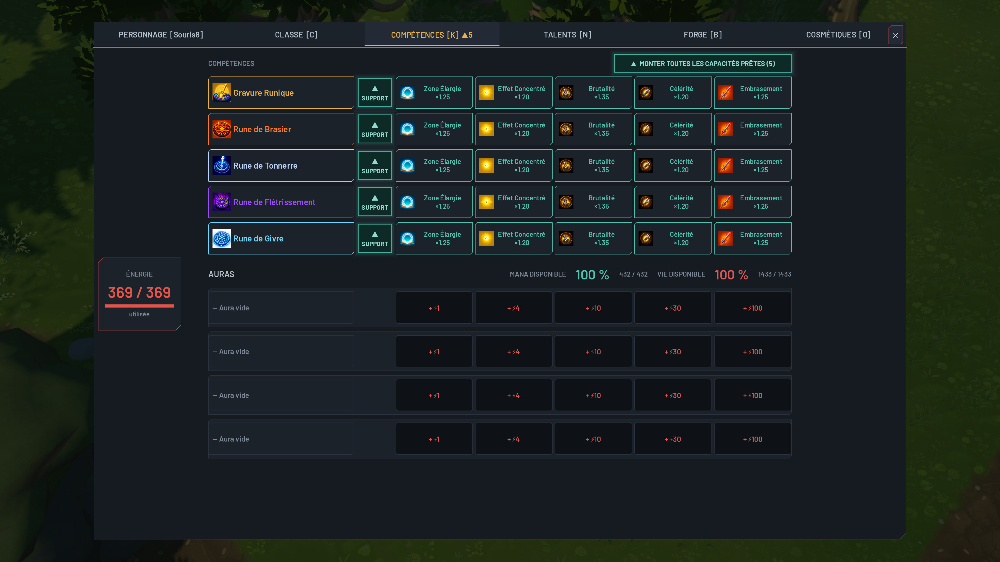

Version 0.2.0 · October 26, 2026
Channelling, forge and comfort
The Summoner, stacking channelling, a reworked Whirlwind and a clearer forge.
The Summoner
A new class and its minions, with the Legion, Bone and Spirits tree and the Bone Golem.
Channelling
Every channelled skill builds up a buff: the reworked Whirlwind gains 10% area per stack. The Dance Step support lets you move without breaking the channel, and Multistrike really repeats the attack.

Forge and comfort
Strictly increasing affix tiers, possible results shown, a sound and a flash with every forge; a bigger hub and a training dummy you start on demand.
Patch notes
What's new
- Summoner class (minions, Legion / Bone / Spirits tree, Bone Golem).
- Stacking channelling: every channelled skill builds a buff (Whirlwind: +10% area per stack). New “max stacks” and “starting stacks” stats (Tornadoes and Nascent Vortex talents).
- Whirlwind remade: clean rotation, new visual effect, slow from −20% (lv. 1) to −10% (lv. 20).
- Any skill interrupts a channel. New Dance Step support: the movement skill does not interrupt it (Whirlwind + Blink).
- Multistrike really repeats the attack; a new multistrike chance stat (beyond 100%, up to 3 strikes).
- Rush knocks down and briefly stuns; Lunge remains a small leap (no more crossing the map with attack speed).
- Training dummy: START / STOP button in its panel, untouchable until it is started.
- A bigger hub (fountain square, forge, training, war table, market).
Forge and items
- Selected modifier framed, possible results with the range of the highest reachable tier, a sound and a flash with every forge.
- Strictly increasing affix tiers (a tier's minimum always exceeds the lower tier's maximum).
- Embers and crystals much rarer.
Balance
- Experience: half as much XP per level. Auras unlocked at levels 15, 25, 35 and 50.
- Base life and mana regeneration reduced (the value shown is the real value).
- Ground trails no longer stack on the same monster and are much cheaper.
- Mind Over Matter works (50% of mana as energy shield).
Interface
- Hover effects on clickable elements, major talents viewable even when locked.
- Options: hide magic items on the ground, monster (red) and ally (green) life bars can be toggled.
- The icon of the skill used for the estimated DPS, elixirs back in the skills, stable slots when changing key bindings.
- Automatic channelling: the character follows the cursor, a new click stops it; no more sliding during attacks.